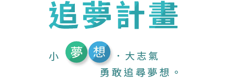
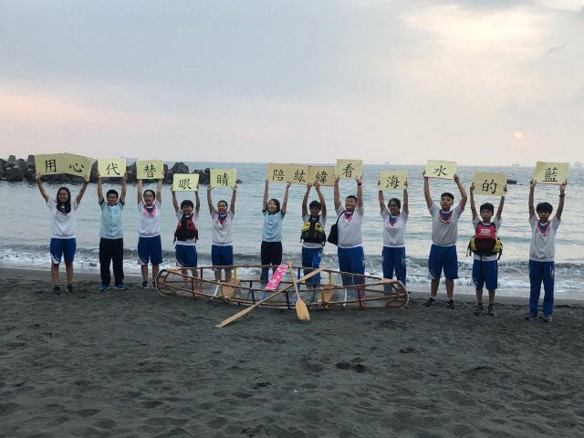
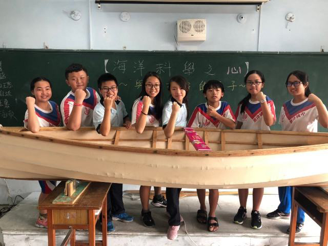
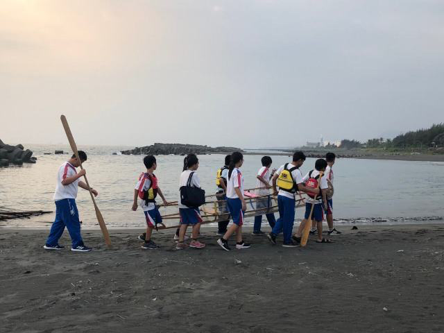

2019 追夢計畫得主 - 海洋科學之星，與海洋共好的孩子
2019 追夢計畫得主
小夢想、大志氣，勇敢追尋夢想
每年公開徵選出五個追夢計畫提供每個最高一百五十萬元的追夢基金，開發孩子在特別領域的能力或專長，讓弱勢孩子不放棄希望，也能成功追夢，改變自己的未來。
2019 追夢計畫得主 - 海洋科學之星，與海洋共好的孩子
高雄市旗津國中
廖紘緯同學因為眼睛病變導致學習及生活上的困難，他罹患雷伯士基因遺傳，視力從正常降至目視0.01，幾乎全盲，但他不曾自暴自棄，激勵自己走出去，挑戰他最喜愛的游泳，拿了蛙式、自由式共六面金牌並獲得總統教育獎的殊榮。在旗津長大的他，很喜歡藍藍的大海，用旗津海水的藍，代表著自己心中的色彩，他的勇敢與不放棄激勵著全校的師生，於是創藝力團隊的師生想陪紘緯圓夢，用心替代眼睛陪紘緯看見海水的藍，更要去國外看看不同國度的海水藍。
創藝力團隊孩子夢想著，計畫在學校組織海洋科學之星團隊，想用雙手打造一艘屬於旗津在地海洋文化的大木船(彩繪海洋圖騰)，及一艘跟教師們合作完成能划在海洋上的透明船，讓團隊在作海洋研究時，可以透過透明船底拍攝美麗的海洋風光，向國人介紹海洋之美。並陪著紘緯划向海洋，感受海水像母親一樣的撫慰心靈。
本校未來的夢想，是以旗津海岸研究為基礎，彙整各地海岸特性(由進至遠)，發展出創新視野的海洋科學，將團隊的研究資料與空拍影片及製作研究過程微電影上傳網站，以海洋科學研究為名，傳遞愛護海洋之心。(讓紘緯擔任海洋愛心大使，以紘緯的故事感動更多的人以行動維護海洋也期待帶著紘緯同學與其母親至日本沖繩學習與交流，讓紘緯尚能接收到微光的視力下與家人及同學留下美好且深刻的回憶。)



TOP